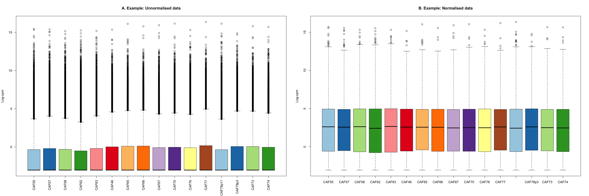
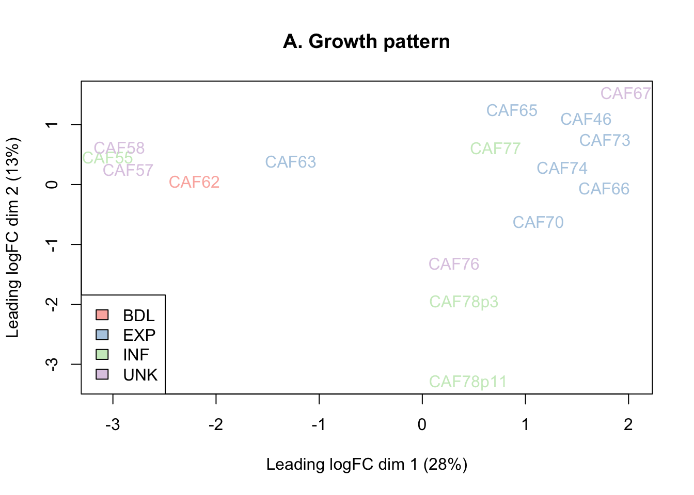
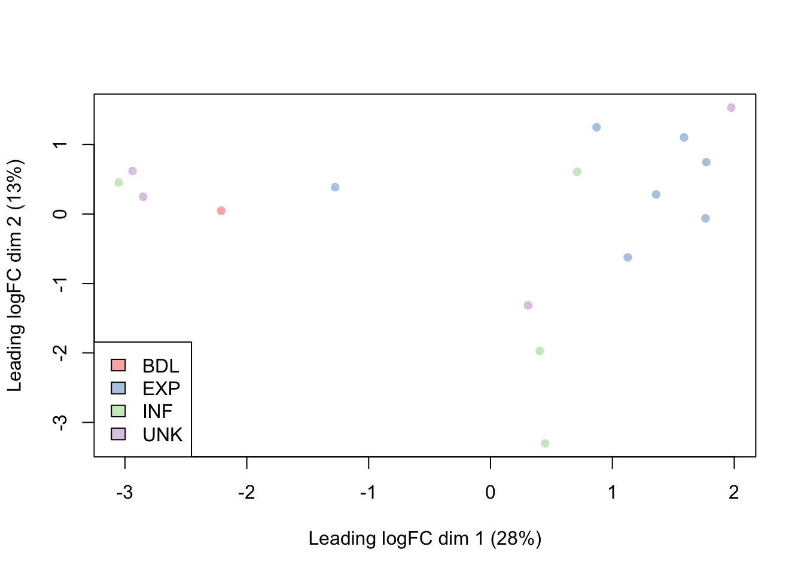
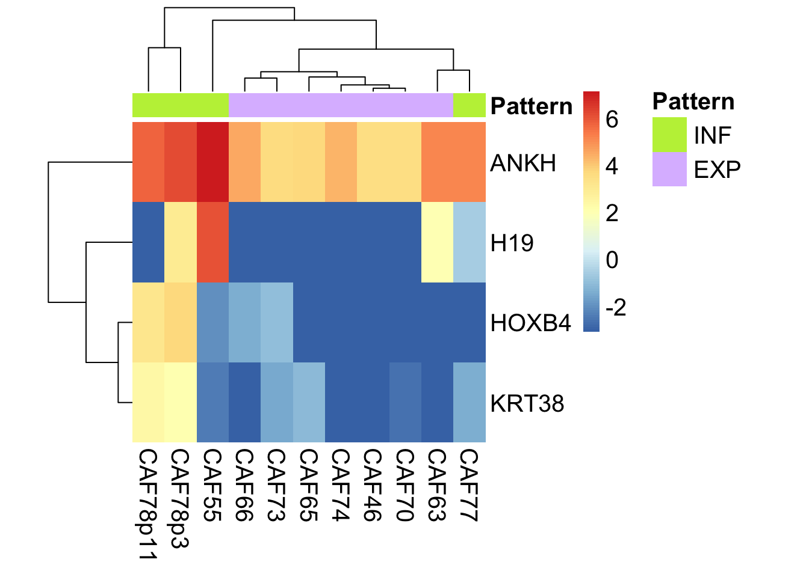

Last updated: 2026-10-20
Checks: 6 1
Knit directory: drug-AUC-analysis/
This reproducible R Markdown analysis was created with workflowr (version 1.7.2). The Checks tab describes the reproducibility checks that were applied when the results were created. The Past versions tab lists the development history.
The R Markdown file has unstaged changes. To know which version of
the R Markdown file created these results, you’ll want to first commit
it to the Git repo. If you’re still working on the analysis, you can
ignore this warning. When you’re finished, you can run
wflow_publish to commit the R Markdown file and build the
HTML.
Great job! The global environment was empty. Objects defined in the global environment can affect the analysis in your R Markdown file in unknown ways. For reproduciblity it’s best to always run the code in an empty environment.
The command set.seed(20240628) was run prior to running
the code in the R Markdown file. Setting a seed ensures that any results
that rely on randomness, e.g. subsampling or permutations, are
reproducible.
Great job! Recording the operating system, R version, and package versions is critical for reproducibility.
Nice! There were no cached chunks for this analysis, so you can be confident that you successfully produced the results during this run.
Great job! Using relative paths to the files within your workflowr project makes it easier to run your code on other machines.
Great! You are using Git for version control. Tracking code development and connecting the code version to the results is critical for reproducibility.
The results in this page were generated with repository version 139f9d5. See the Past versions tab to see a history of the changes made to the R Markdown and HTML files.
Note that you need to be careful to ensure that all relevant files for
the analysis have been committed to Git prior to generating the results
(you can use wflow_publish or
wflow_git_commit). workflowr only checks the R Markdown
file, but you know if there are other scripts or data files that it
depends on. Below is the status of the Git repository when the results
were generated:
Ignored files:
Ignored: .DS_Store
Ignored: .RData
Ignored: .Rhistory
Ignored: .Rproj.user/
Ignored: analysis/.DS_Store
Ignored: analysis/.RData
Ignored: analysis/.Rhistory
Ignored: data/.DS_Store
Ignored: data/1dose_Relative_AUCs_allconcs_log10.xlsx
Ignored: data/2dose_Relative_AUCs_allconcs_log10.xlsx
Ignored: data/AUC_metadata.xlsx
Ignored: data/AUC_metadata_JAN2026.xlsx
Ignored: data/gse.rds
Ignored: data/raw_AUC_data/
Ignored: data/relAUC_metadata.xls
Ignored: data/sampleinfo_master.xlsx
Unstaged changes:
Modified: analysis/CAFS_DE.Rmd
Note that any generated files, e.g. HTML, png, CSS, etc., are not included in this status report because it is ok for generated content to have uncommitted changes.
These are the previous versions of the repository in which changes were
made to the R Markdown (analysis/CAFS_DE.Rmd) and HTML
(docs/CAFS_DE.html) files. If you’ve configured a remote
Git repository (see ?wflow_git_remote), click on the
hyperlinks in the table below to view the files as they were in that
past version.
| File | Version | Author | Date | Message |
|---|---|---|---|---|
| html | 139f9d5 | kitadalvi | 2026-10-20 | update CAFS_DE |
| Rmd | 08648d7 | kitadalvi | 2026-10-20 | CAFS DE updated |
Friday 16th Oct, 2026:
This analysis aims to identify diferentially expressed genes between infiltrative and expansile CAF samples. The aligned RNAseq rawdata and sample metadata sheet used in this analysis are stored in:
• ‘/Lab Shared/Nikita/RNAseq_STAR_aligned/merged_counts_renamed.txt’
• ‘/Lab Shared/Nikita/RNAseq_STAR_aligned/sampleinfo_master.xlsx’
Updated metadata sheet of all samples:
For the purpose of this analysis, we focus on only the CAF samples:
A quick look at the rawdata for the corresponding CAF samples:
ENSEMBL_GeneID CAF55 CAF57 CAF58 CAF62 CAF63 CAF46
1 __alignment_not_unique 1972061 1882829 1682192 1203978 1764045 1976444
2 __ambiguous 211573 195150 195413 142567 193126 203150
3 __no_feature 4145741 4282209 3441212 2113616 3761950 14365099
4 __not_aligned 0 0 0 0 0 0
5 __too_low_aQual 0 0 0 0 0 0
6 5S_rRNA 0 0 0 0 2 2
CAF65 CAF66 CAF67 CAF70 CAF76 CAF77 CAF78p11 CAF78p3
1 2318861 2267504 2559443 3169499 2530205 2229030 2724192 2348215
2 218342 196232 216379 272790 225217 202168 225508 223002
3 15479057 14546190 18128361 19287573 11264128 14889362 11953369 13646873
4 0 0 0 0 0 0 0 0
5 0 0 0 0 0 0 0 0
6 3 14 8 30 14 6 0 6
SCS15 SCS16
1 2393246 2189189
2 205567 195568
3 18959488 14943894
4 0 0
5 0 0
6 23 2Factors to include in design:
• Sequencing batch (1,2,3)
• Growth pattern (INF,EXP,UNK)
• Tumour Type (Primary, Recurrence)

| Version | Author | Date |
|---|---|---|
| 139f9d5 | kitadalvi | 2026-10-20 |
[1] "Number of genes BEFORE filtering = 56629"[1] "Number of genes AFTER filtering = 20180"
| Version | Author | Date |
|---|---|---|
| 139f9d5 | kitadalvi | 2026-10-20 |

| Version | Author | Date |
|---|---|---|
| 139f9d5 | kitadalvi | 2026-10-20 |
Top differentially expressed genes between INF and EXP samples using significance threshold of FDR < 0.05:

| Version | Author | Date |
|---|---|---|
| 139f9d5 | kitadalvi | 2026-10-20 |
R version 4.4.0 (2024-04-24)
Platform: aarch64-apple-darwin20
Running under: macOS 15.7.9
Matrix products: default
BLAS: /Library/Frameworks/R.framework/Versions/4.4-arm64/Resources/lib/libRblas.0.dylib
LAPACK: /Library/Frameworks/R.framework/Versions/4.4-arm64/Resources/lib/libRlapack.dylib; LAPACK version 3.12.0
locale:
[1] en_US.UTF-8/en_US.UTF-8/en_US.UTF-8/C/en_US.UTF-8/en_US.UTF-8
time zone: Australia/Melbourne
tzcode source: internal
attached base packages:
[1] stats4 stats graphics grDevices utils datasets methods
[8] base
other attached packages:
[1] lubridate_1.9.5 forcats_1.0.1 stringr_1.6.0
[4] purrr_1.2.1 readr_2.2.0 tidyr_1.3.2
[7] tibble_3.3.1 tidyverse_2.0.0 dplyr_1.2.0
[10] readxl_1.4.5 EnhancedVolcano_1.24.0 ggrepel_0.9.6
[13] DT_0.34.0 org.Hs.eg.db_3.20.0 AnnotationDbi_1.68.0
[16] IRanges_2.40.1 S4Vectors_0.44.0 Biobase_2.66.0
[19] BiocGenerics_0.52.0 enrichplot_1.26.6 clusterProfiler_4.14.6
[22] RColorBrewer_1.1-3 ggpubr_0.6.3 edgeR_4.4.2
[25] limma_3.62.2 ggplot2_4.0.2 pheatmap_1.0.13
[28] workflowr_1.7.2
loaded via a namespace (and not attached):
[1] rstudioapi_0.18.0 jsonlite_2.0.0 magrittr_2.0.4
[4] ggtangle_0.1.1 farver_2.1.2 rmarkdown_2.30
[7] fs_1.6.6 zlibbioc_1.52.0 vctrs_0.7.1
[10] memoise_2.0.1 ggtree_3.14.0 rstatix_0.7.3
[13] htmltools_0.5.9 broom_1.0.12 cellranger_1.1.0
[16] Formula_1.2-5 gridGraphics_0.5-1 sass_0.4.10
[19] bslib_0.10.0 htmlwidgets_1.6.4 plyr_1.8.9
[22] cachem_1.1.0 whisker_0.4.1 igraph_2.2.2
[25] lifecycle_1.0.5 pkgconfig_2.0.3 gson_0.1.0
[28] Matrix_1.7-4 R6_2.6.1 fastmap_1.2.0
[31] GenomeInfoDbData_1.2.13 digest_0.6.39 aplot_0.2.9
[34] colorspace_2.1-2 patchwork_1.3.2 ps_1.9.1
[37] rprojroot_2.1.1 crosstalk_1.2.2 RSQLite_2.4.6
[40] labeling_0.4.3 timechange_0.4.0 httr_1.4.8
[43] abind_1.4-8 compiler_4.4.0 bit64_4.6.0-1
[46] withr_3.0.2 S7_0.2.1 backports_1.5.0
[49] BiocParallel_1.40.2 carData_3.0-6 DBI_1.3.0
[52] R.utils_2.13.0 ggsignif_0.6.4 rappdirs_0.3.4
[55] tools_4.4.0 otel_0.2.0 ape_5.8-1
[58] httpuv_1.6.16 R.oo_1.27.1 glue_1.8.0
[61] callr_3.7.6 nlme_3.1-168 GOSemSim_2.32.0
[64] promises_1.5.0 grid_4.4.0 getPass_0.2-4
[67] reshape2_1.4.5 fgsea_1.32.4 generics_0.1.4
[70] gtable_0.3.6 tzdb_0.5.0 R.methodsS3_1.8.2
[73] hms_1.1.4 data.table_1.18.2.1 car_3.1-5
[76] XVector_0.46.0 pillar_1.11.1 yulab.utils_0.2.4
[79] later_1.4.7 splines_4.4.0 treeio_1.30.0
[82] lattice_0.22-9 bit_4.6.0 tidyselect_1.2.1
[85] GO.db_3.20.0 locfit_1.5-9.12 Biostrings_2.74.1
[88] knitr_1.51 git2r_0.36.2 xfun_0.56
[91] statmod_1.5.1 stringi_1.8.7 UCSC.utils_1.2.0
[94] lazyeval_0.2.2 ggfun_0.2.0 yaml_2.3.12
[97] evaluate_1.0.5 codetools_0.2-20 qvalue_2.38.0
[100] ggplotify_0.1.3 cli_3.6.5 processx_3.8.6
[103] jquerylib_0.1.4 dichromat_2.0-0.1 Rcpp_1.1.1
[106] GenomeInfoDb_1.42.3 png_0.1-8 parallel_4.4.0
[109] blob_1.3.0 DOSE_4.0.1 tidytree_0.4.7
[112] scales_1.4.0 crayon_1.5.3 rlang_1.1.7
[115] cowplot_1.2.0 fastmatch_1.1-8 KEGGREST_1.46.0